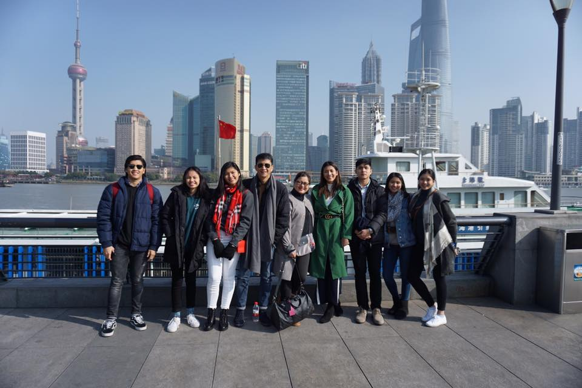
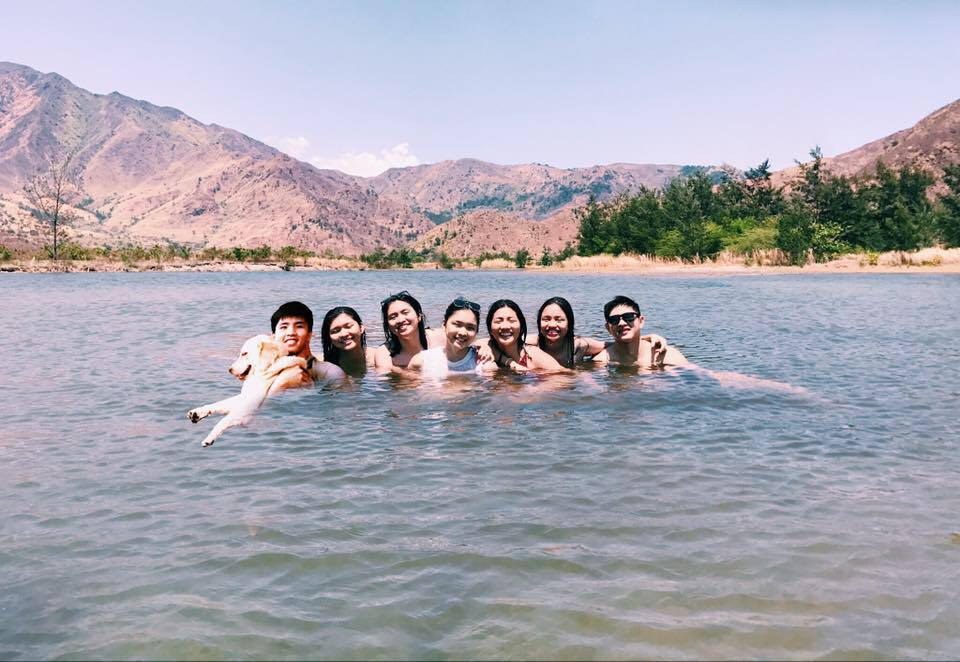
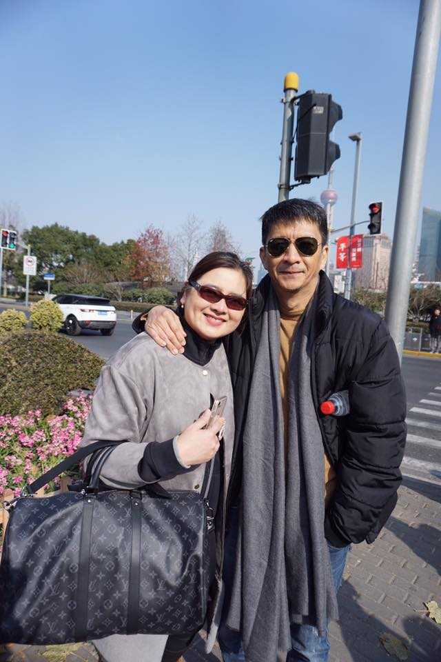

About my family
Having a big family is the best
Attention Grabber
- Having a family with 9 member all of which are taller than your average family will turn heads

Many Siblings
- Having 7 siblings is the best because you do not run out of people to talk to and there is always someone around the house

Parents
- I owe my life to my parents for giving me the best life i could possible have and given all they can even if they have 7 kids. They are my rock.

This site was designed and developed by Arvidas Kio M. Dy
Email comments and suggestions to
arvidas_dy@dlsu.edu.ph